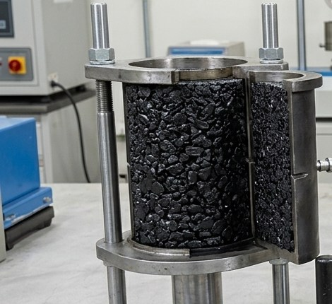
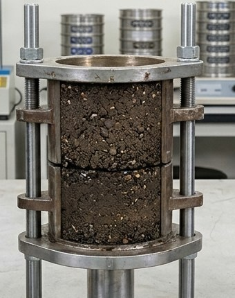
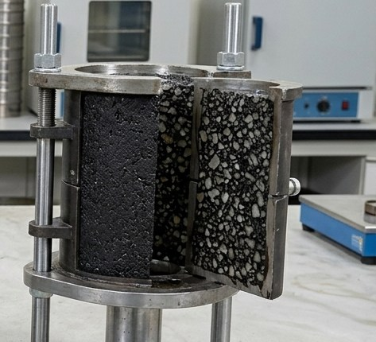
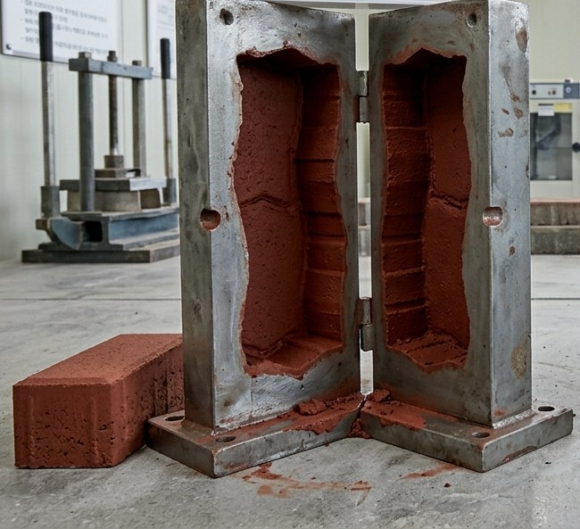
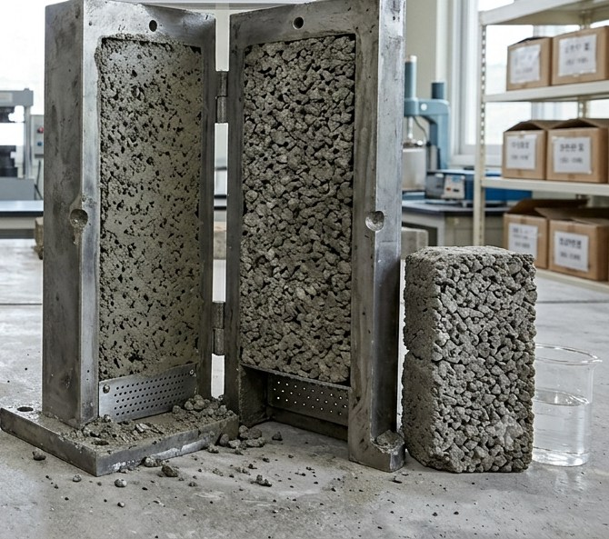

아스팔트 포장의 구성 및 종류
표층Surface Course · 5cm
밀실한 입도로 미끄럼 방지, 빗물 침투 차단. 차량 타이어가 직접 닿는 층으로 평탄성과 소음 저감 효과 우수.
중층Binder Course · 6cm
전단응력 완화, 하중을 하부 기층에 고르게 전달. 프라임 코트·택 코트로 상·하부 층 단단히 접착.
기층Base Course · 15cm
굵은 골재 사용, 도로 전체의 휨 저항력과 하중을 지지하는 포장 구조의 뼈대.
보조기층Subbase Course · 40cm
상부 하중을 노상으로 분산, 쇄석·자갈 층으로 지지력 확보 및 배수.
동상방지층Anti-Frost Layer
자갈·모래 사용, 겨울철 지반이 얼어 솟아오르는 동상 현상 차단.
노상 / 원지반Subgrade
다져진 최하부 토사 지반, 도로의 최종 하중 지지.
아스팔트 혼합물 종류

가열아스팔트 혼합물 HMA
신규 골재 및 버진 아스팔트 사용.

순환아스팔트 혼합물 RMA
RAP(재생골재) 30% 혼입.

특수아스팔트 혼합물 SMA
높은 내구성 및 소성변형 저항성.
특수 콘크리트 제품

칼라콘 Color Concrete
다양한 색상 구현이 가능한 컬러 콘크리트 제품.

투수콘 Permeable Concrete
빗물이 지면으로 스며들도록 만든 투수성 콘크리트 제품.